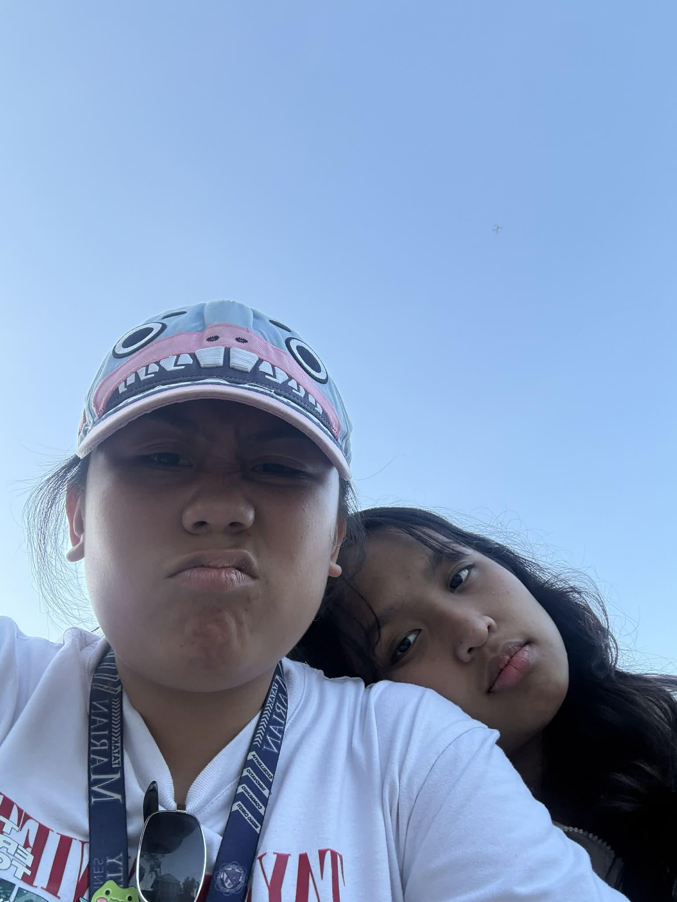
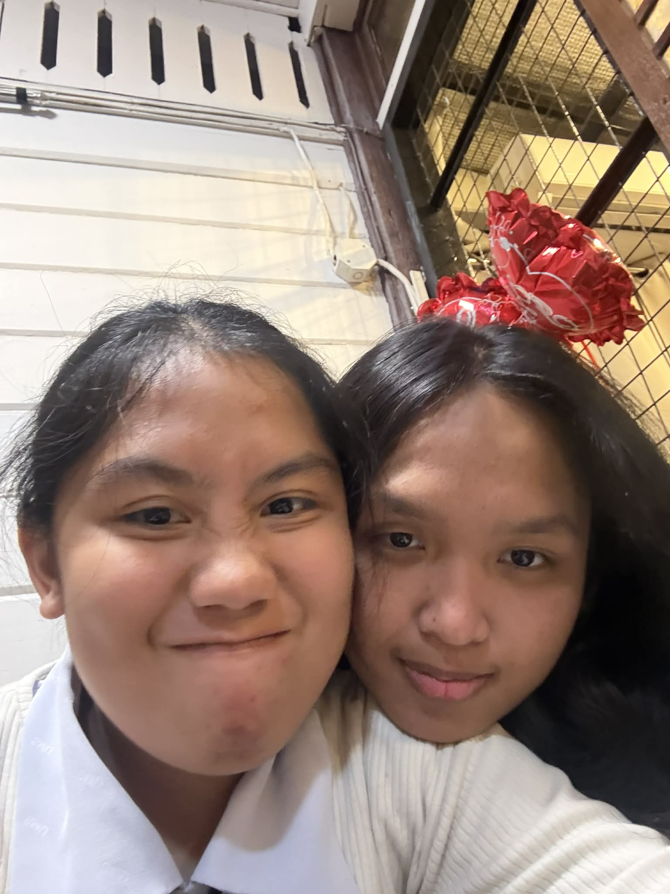

Ready for your surprise?
Open Surprise 💌
Hi Alexandrine! Do you want to see your surprise? 🐧✨
Yes! 😍
No ☹️
Our Moments 📸


Continue? ✨
Catch 29 Hearts for the Surprise! ✨
Score: 0
Para sa'yo, Alexandrine 💐